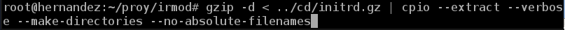

- Módulo: Sistemas Operativos
- Título del trabajo Instalación Desatendida.
- Componentes del grupo: Iván José Hdez Regalado e Isabel Quintero Sánchez
- Curso Académico: 2013/2014
- Fecha de entrega: 20 de Mayo de 2014
Como no contamos con el paquete 'debian-installer', lo instalamos mediante el comando:apt-get source debian-intaller.
Para poder usar debian-installer, debemos hacerlo desde un sistema que use repositorios inestables. Tenemos que comprobar los paquetes instalados en el sistema con una lista de las dependencias de nuestro paquete, luego se mostrará en pantalla las dependencias incumplidas. Todo esto mediante el comando dpkg-checkbuilddeps, que se realizará desde el directorio raíz de debian-installer.
Después de obtener la lista, procedemos a instalar los paquetes desatendidos mediante el comando apt-get install seguido del nombre del paquete que queremos instalar.
Finalmente,completamos el paquete debian-installer con los udebs requeridos para cada imagen desde el directorio raiz del instalador, ejecutando el comando dpkg-buildpackage.
Entramos en el fichero de configuración build/config/x86.cfg para cambiar el path en el cual el instalador busca la imagen y modificamos la línea 14, la cual contiene: SPLASH_PNG=boot/x86/pics/joy.png
Una vez instaladas las dependencias y elegidos los repositorios deseados, lo que queda es generar la imagen. Para ello se debe tener en cuenta la arquitectura y el tipo. Para obtener una lista de todas las posibles combinaciones de arquitecturas y tipos, basta con utilizar el comando: make.
Una vez elegidas las opciones, hay que generar la imagen, será generada en el directorio build/dest. Se puede crear una imagen mini-ISO con solo el netboot initrd en ella. Por ejemplo, el comando make build_netboot creará una imagen en build/dest/netboot/mini.iso, usando isolinux.
La preconfiguración ofrece un mecanismo para responder a preguntas realizadas durante la instalación sin tener que introducir manualmente las respuestas mientras ésta se ejecuta. Esto hace posible que se automaticen la mayoría de las instalaciones e incluso ofrece funcionalidades que no están disponibles durante una instalación normal. Para ello se crea un archivo preseed.cfg, en el cual se incluirán todas las opciones a automatizar.
Tendremos que editar el archivo de configuración ubicado en installer/build/config/common.
En el ubicaremos la variable PRESEED y le especificaremos el directorio donde se encuentra nuestro archivo preseed.cfg:
PRESEED = /home/
Las imágenes ISO no se pueden modificar una vez creadas, por lo tanto, la montamos en un directorio, y luego copiamos su contenido a otro

El paso siguiente es modificar el initrd. Para ello, ingresaremos la siguiente secuencia de comandos:

Luego, para que el directorio cd/ quede listo para convertirse en una imagen ISO, tendremos que actualizar el md5sum.txt
Lo que resta ahora es generar la imagen ISO, y que esta sea booteable.
Cogemos la ISO creada y comprobamos en una MV si se instala correctamente.